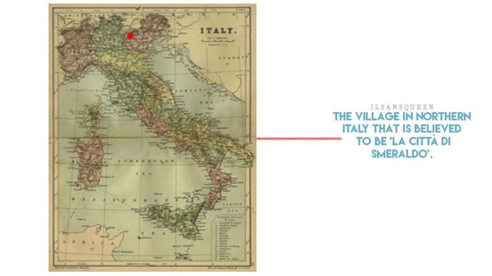

Как Вы думаете, Вы прекрасны? Я когда-то видел эксперимент, где людям нужно было выбрать между дверьми с надписями «Я красивый» и «Я некрасивый». Если бы Вы в нём участвовали, то какую бы выбрали? Причина, по которой я вспомнил об этом, — это история о Смеральдо, о любви.
История Смеральдо началась в деревушке на севере Италии где-то в 15-16 веках. В деревне под названием ‘La Città di smeraldo’ был небольшой укромный замок. В этом замке жил уродливый человек. Об этом человеке мало что известно. «Он был любимым ребёнком герцога из могущественной семьи в Пиренеях. Герцог влюбился в дочь садовника и у них родился ребёнок, но мать скончалась от кровотечения во время родов. Жена и дети герцога хотели избавиться от ребёнка, поэтому он помог тому сбежать». Ходило множество слухов, но ни один не был подтверждён.
Человек спрятался в замке, в одиночестве. Возможно, из-за того, что с детства он сталкивался с ненавистью и оскорблениями, он не смог никому открыть своё сердце. И теперь он злился и прятался, когда кто-то пытался приблизиться к нему. Его единственной усладой было выращивание сада. Но однажды возле замка появилась какая-то женщина. Женщина в лохмотьях сняла свою обувь, перепрыгнула через ограду и украла цветок. Человек был очень зол и поначалу сторожил сад по ночам. Но, уловив момент дремоты, женщина вновь пробралась в сад и украла цветок. Это продолжалось в течение нескольких дней, пока человек не притворился, что спит, и не проследил, как женщина появляется. Ему было интересно. Неосознанно человек ждал её и однажды последовал за ней.
Он укрыл себя плащом, последовал за ней и обнаружил, что та бедная и слабая женщина продавала цветы, чтобы выжить. Человек хотел помочь женщине. Он хотел научить её каждому способу выращивания цветов, какие знал сам. Он хотел научить выращивать её красивые цветы. Но он не мог подойти к женщине. Она могла бы побояться его, ей бы не понравилось его уродство. В конце концов, всё, что он мог делать, — это растить цветы, чтобы она продолжала ходить к нему в сад. Человек решил создать цветок не из этого мира. Он начал создавать цветок, который женщина могла бы продать по более высокой цене. Человек заперся в замке, чтобы сделать цветок. После долгих бесчисленных попыток у него получилось создать цветок, которого никогда не существовало в этом мире, и заполнить им сад. Но женщина больше не появлялась. Как долго бы он ни ждал, она не приходила в сад. Человек забеспокоился и отправился в деревню, закрыв своё лицо. Но женщина уже была мертва. Это была история смеральдо. Никто не знает правдива ли она, но каждый раз, когда я вижу смеральдо, она приходит мне на ум и заставляет задуматься. Что, если бы человек собрал всё своё мужество и показал лицо, раскрыв правду? Женщина могла испугаться и убежать или разозлиться. Мужество — трудная вещь. 